Лендинг и кабинет участника STOлица.Лето
Три визуальные версии — одна логика продукта
- Figma
- Illustrator
У «СТОлицы.Лето» лендинг был и раньше, но каждый сезон он менялся. 2025 год не стал исключением
Мне нужно было не придумывать продукт с нуля, а разобраться в существующем: пересобрать его структуру и дать ему новый визуальный язык
Я прошла весь путь — от первых схем на бумаге и пользовательских сценариев до UI-системы, адаптива и передачи проекта разработчикам. Визуальный язык сайта за это время менялся трижды, а структура и сценарий оставались прежними
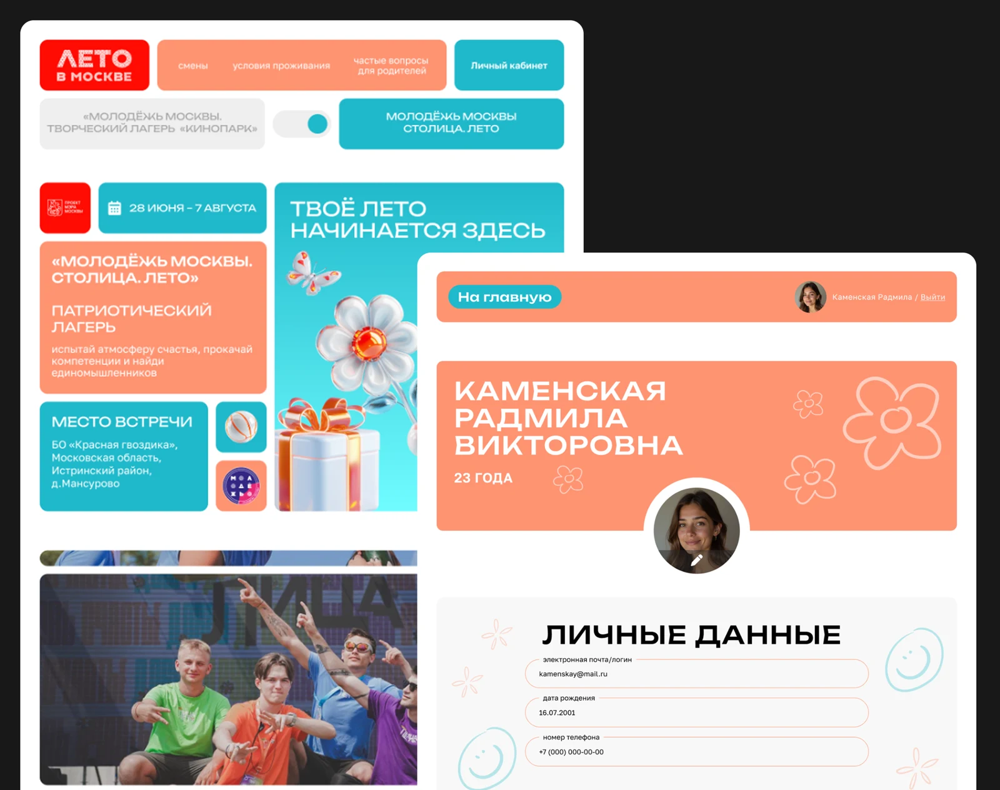
- Масштаб: 3 000+ участников сезона, 6 тематических смен
- Формат: B2C, веб, аудитория 18–35 лет
- Моя роль: единственный дизайнер проекта — информационная архитектура, UX/UI, UI-kit, адаптив, иллюстрация, передача в разработку
01. С чего всё началось
«СТОлица.Лето» — молодёжный лагерь для аудитории 18–35 лет
Сайт должен был сначала заинтересовать человека проектом и помочь выбрать смену, а затем переключиться в другой режим — регистрацию и подачу заявки
Практическая информация была важна не только самим участникам. У информационной части была и вторичная аудитория — родители, поэтому одной атмосферы было недостаточно. Рядом с фотографиями, программой и сменами должны были быть понятные ответы на вопросы об условиях проживания, безопасности и организации лагеря
Получалось, что одна цифровая платформа должна была делать две вещи подряд:
познакомить и помочь выбрать → провести через подачу заявки
Я была единственным дизайнером проекта и отвечала за информационную архитектуру, пользовательские сценарии, UX/UI, визуальную концепцию, иллюстрации, версии для компьютера и мобильных устройств и подготовку макетов к разработке
02. От чего я отталкивалась
Когда я пришла в проект, у «СТОлицы.Лето» уже был сайт прошлых сезонов, но живым его назвать было нельзя: после окончания смен его закрывали, и найти его в интернете уже было невозможно. От него остались только материалы
Поэтому я работала не с действующим продуктом, а с тем, что сохранилось: экранами и сценариями прошлой версии. Начинать с нуля тоже не хотелось: основной сценарий в них был понятен — зарегистрироваться, заполнить многоэтапную анкету, выполнить творческое задание и отправить заявку
Перед редизайном я сначала прошла существующие сценарии по этим материалам и посмотрела, что действительно требует изменений, а что можно сохранить
По мере развития проекта внутри накопилось много разных сущностей: промо-контент, смены, длинные формы, загрузка файлов, выпадающие списки, предупреждения, ошибки и подтверждения. По отдельности они работали, но вместе продукту уже требовалась более цельная логика
Визуально старая версия держалась на фотографии палатки на первом экране и цветных линиях, которые тянулись через всю страницу. В анкете у каждого этапа был свой цвет: фиолетовый, оранжевый, голубой, зелёный
Страница десктоп
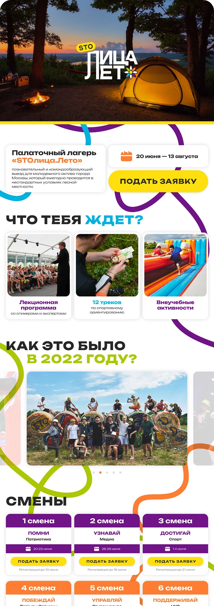
Анкета — шаг 1
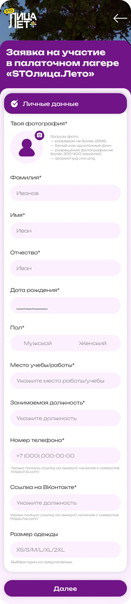
Анкета — шаг 2
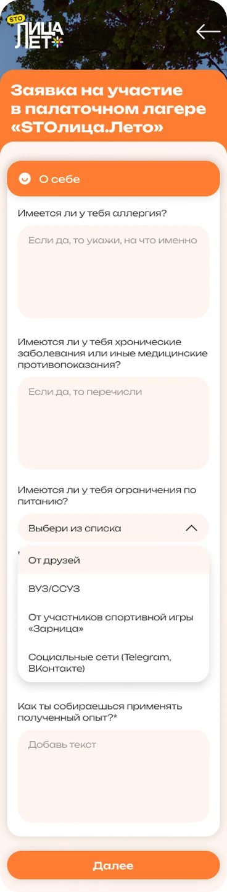
Ошибка
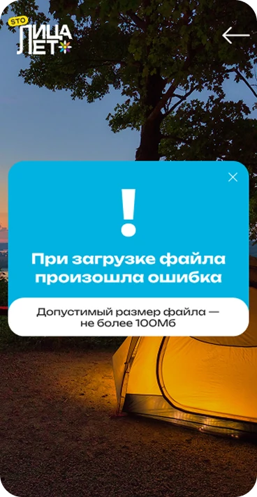
Успешная отправка
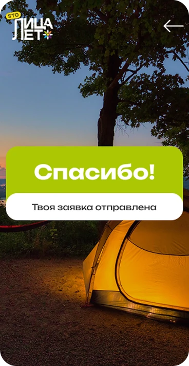
Мобильная версия
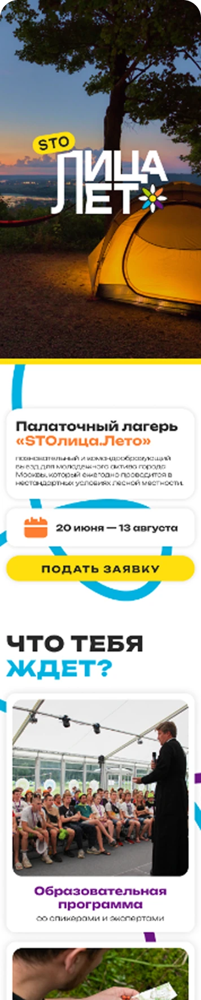
Старый сайт — не мой макет, показываю как «до»: страница на компьютере и телефоне, этапы анкеты, ошибка, успешная отправка
Я выделила несколько направлений работы:
- выстроить понятную иерархию большого объёма информации
- связать промо-сайт и подачу заявки в один последовательный путь
- привести формы и системные состояния к общим правилам
- обновить визуальный язык, не разрушив рабочую механику сценария
Для меня было важно не менять интерфейс только потому, что начался редизайн
03. Сначала я разобралась со структурой
Я не начинала проект с поиска визуального стиля. Сначала вручную разложила лендинг на смысловые блоки: какая информация вообще нужна человеку, в каком порядке он должен её получать и в какой момент уже готов перейти к заявке
В набросках я перебирала, что вообще может быть на странице:
- шапка: логотип, о проекте, смены, спикеры и гости, галерея, отзывы, FAQ и кнопка
- «Чему ты научишься на STOлица.Лето?»
- расписание смен
- отзывы и спикеры прошлых лет
- три причины подать заявку
- частые вопросы и «Остались вопросы?» с кнопкой
- подвал
Там же появилась идея, из которой потом выросла первая визуальная версия: блок, где сравниваются два человека — один остался в Москве, второй поехал на слёт
Часть блоков потом ушла, часть объединилась. Из этих набросков постепенно сложилась структура:
первый экран → атмосфера проекта → тематические смены → что ждёт участника → условия и проживание → часто задаваемые вопросы → партнёры → контакты → заявка
Набросок от руки
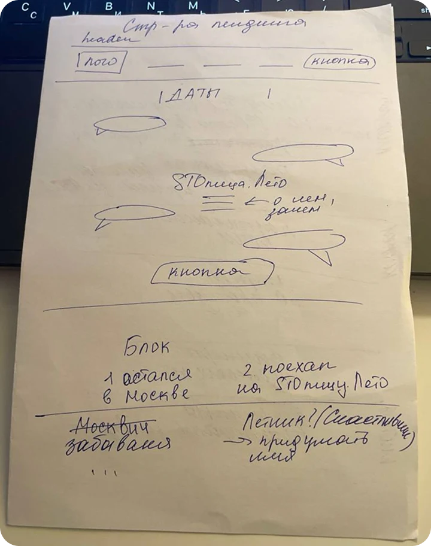
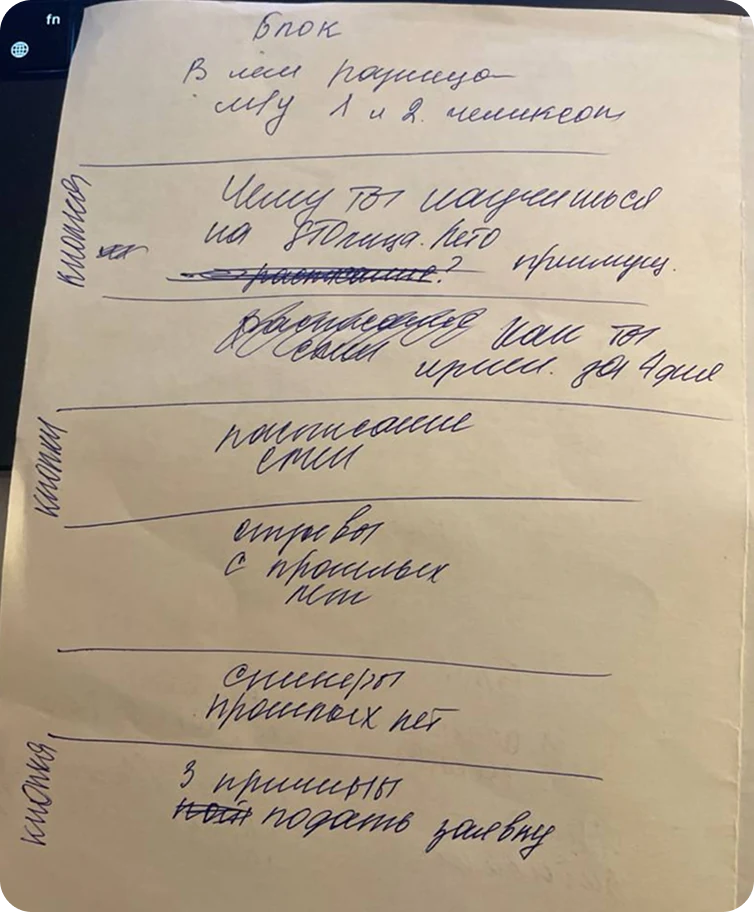
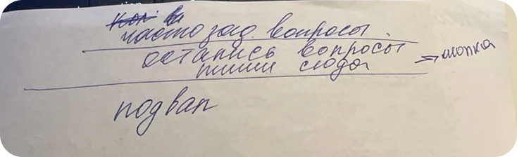
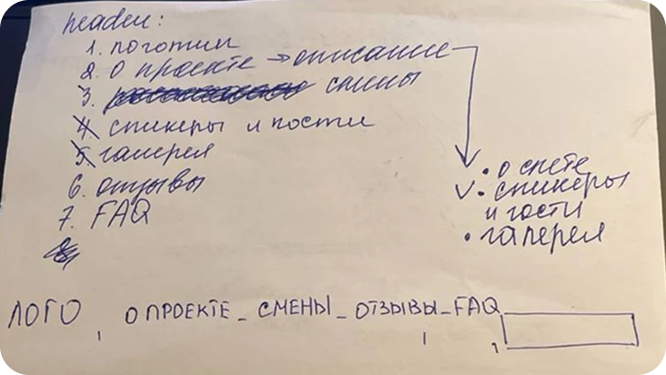
Бумажные наброски: шапка, блоки, вопросы и подвал
При этом на странице должны были работать два разных слоя. Первый — эмоциональный, он отвечает на вопрос «Хочу ли я туда?»: фотографии, атмосфера лагеря, смены, программа и впечатление от проекта
Второй — рациональный: «Подходит ли мне это и что нужно сделать для участия?» Здесь даты, условия проживания, организационная информация, ответы на вопросы и переход к заявке
Так лендинг не превращался ни в сухую справочную страницу, ни в красивый промо-сайт без необходимой конкретики
Для длинной страницы я также предусмотрела закреплённую якорную навигацию. Если пользователь возвращался за конкретной информацией, ему не нужно было каждый раз проходить весь сайт сверху вниз
Потом я перенесла структуру в серые вайрфреймы — для компьютера и для телефона, без цвета и графики, чтобы сначала проверить порядок блоков и сценарий
Вайрфреймы
Первая версия · компьютер
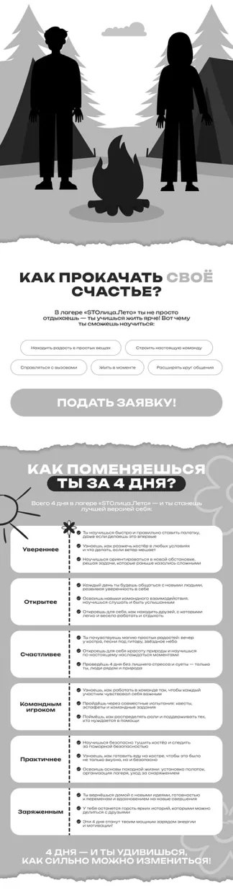
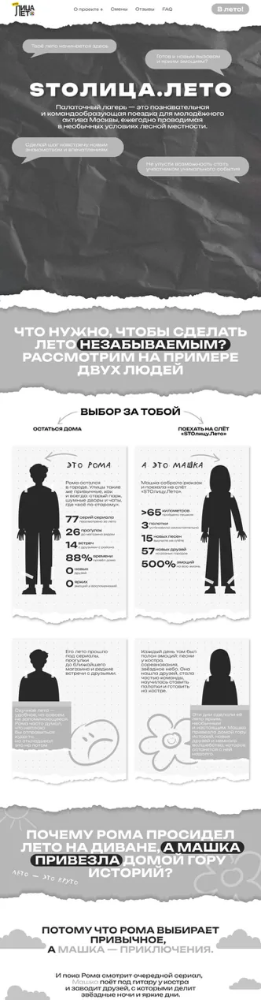
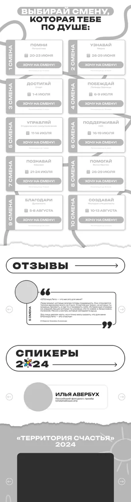
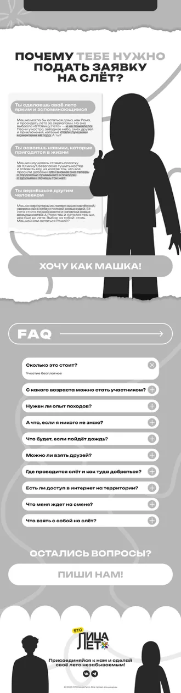
Первая версия · телефон
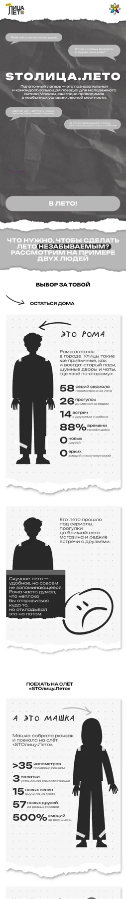
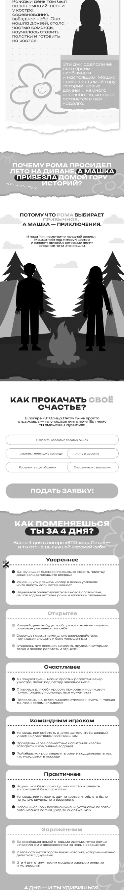
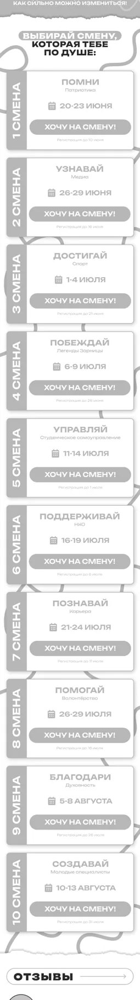
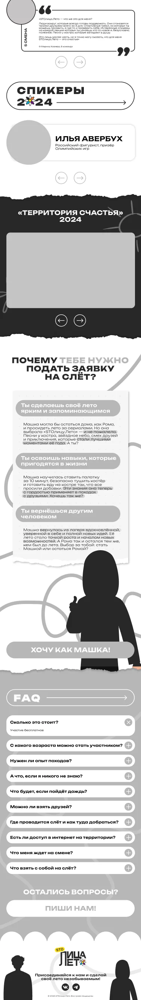
Финальная версия · компьютер
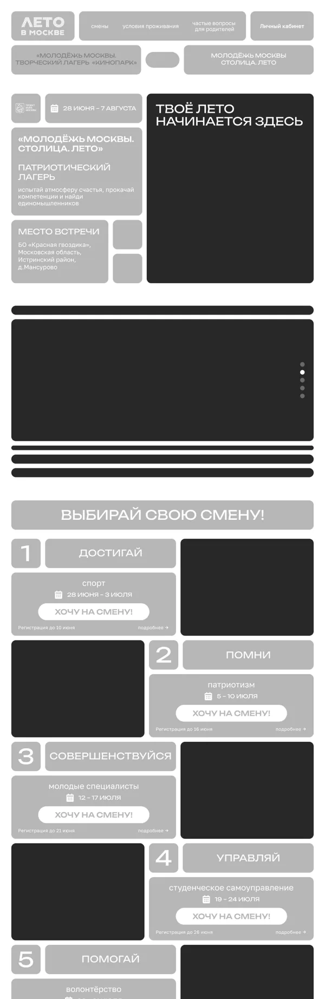
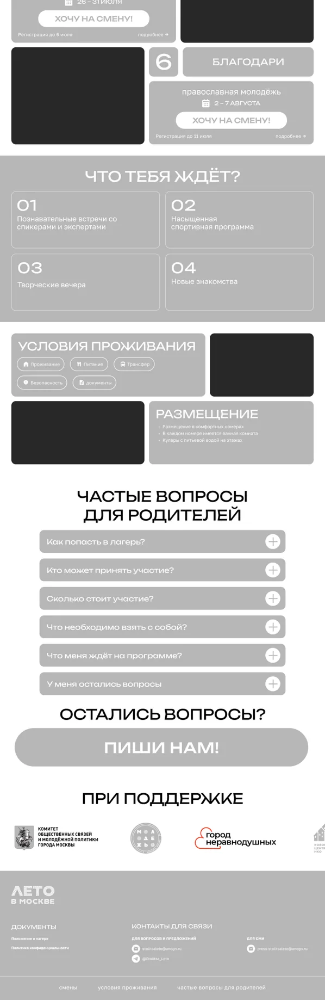
Первая версия на компьютере и телефоне, финальная — на компьютере. Структура проверялась в сером, до цвета и графики
04. Как промо превращается в заявку
Структура лендинга — только половина пути. Его нужно было связать с сервисной частью: регистрацией, кабинетом и подачей заявки
Путь участника: от промо до кабинета
Новый участник
- 01лендинг
- 02«Хочу на смену!»
- 03регистрация
- 04подтверждение почты
- 05личный кабинет
- 06моя анкета
- 07выбор смены
- 08портфолио
- 09подача заявки
Вернувшийся участник
- 01вход
- 02личный кабинет
- 03существующая заявка
- 04нужное действие
- промо
- вход в сервис
- личный кабинет
Новый участник проходит все девять шагов. Вернувшемуся нужно меньше: войти и сразу попасть в кабинет к своей заявке
Задача менялась по ходу сценария. На лендинге человек решает, хочет ли он в проект. После «Хочу на смену!» вопрос другой: что нужно сделать, чтобы подать заявку. А после отправки он остаётся в том же кабинете и следит за статусом там же
Во второй версии анкета ещё шла отдельными экранами между регистрацией и кабинетом. В финальной все шаги заявки собраны в кабинете — об этом в следующем разделе
Так промо-сайт и сервис складываются в один путь, а не в две отдельные части
05. Сценарий анкеты я решила не ломать
Одним из первых вопросов была сама анкета. Можно было использовать редизайн как повод полностью пересобрать её: сократить количество экранов, объединить поля или превратить всё в одну длинную форму
Но у меня не было данных, которые показывали бы, что существующая этапность сама по себе создаёт проблему. Поэтому я не стала менять сценарий ради количества изменений
Анкета сохранила последовательность:
личные данные → о себе → творческое задание → отправка
Так пользователь работает с одной смысловой группой информации за раз, а не получает длинное полотно из десятков разнородных вопросов. Моя задача была другой: сделать этапы последовательными, привести формы к единой логике и продумать состояния, которые возникают по ходу заполнения
Во второй версии анкета ещё шла отдельными экранами: «Анкета // шаг 1», «Анкета // шаг 2», «Творческое задание». В финальной заявка собрана в личном кабинете. Кабинет состоит из блоков, которые идут в порядке заявки:
личные данные → моя анкета → выбор смены → портфолио → подача заявки
Каждый блок показывает своё состояние. «Заполнить» меняется на «Посмотреть». Выбранная смена встаёт в блок «Твоя смена» с кнопкой «Изменить смену». Рядом с подачей заявки сразу виден срок: «Отправить заявку можно до 10 июня!»
Заявка живёт в личном кабинете
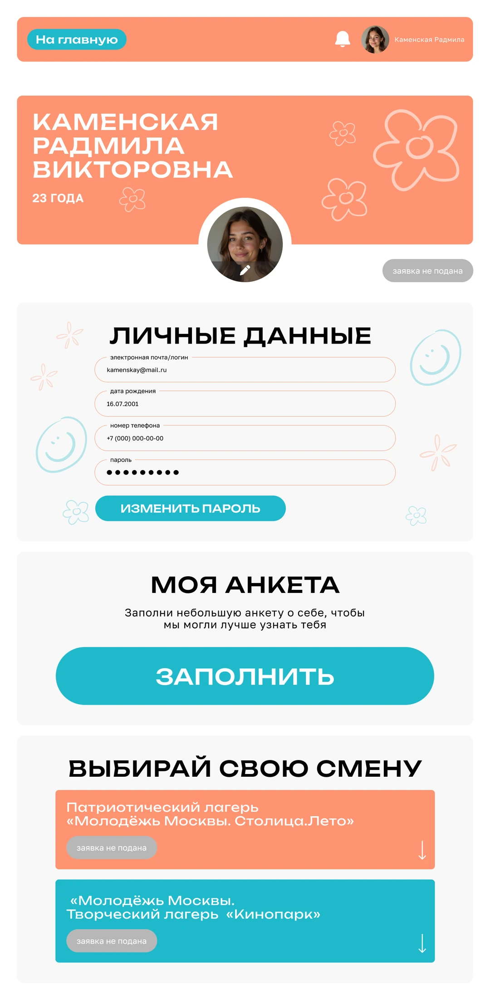
1Старт
первое касание с личным кабинетом: здесь участник выбирает смену в одном из двух лагерей
- Статусзаявка не поданаметка под фото и на карточках лагерей
- Моя анкетаЗаполнить
- Выбор лагеряСТОлица.ЛетоКинопарккаждый открывается списком смен
- Паролькнопка «Изменить пароль» открывает окно смены пароля
- Возрастесли возраст не подходит по правилам лагеря, появится уведомление
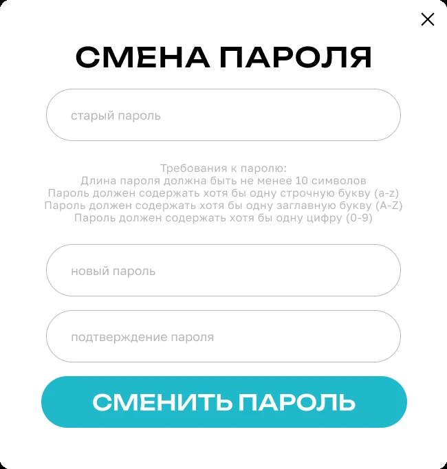
смена пароля 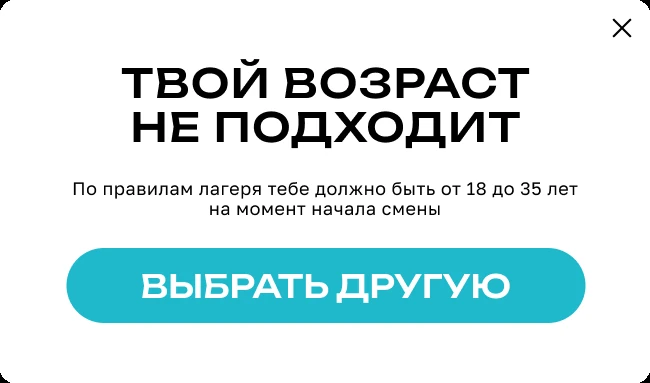
возраст не подходит
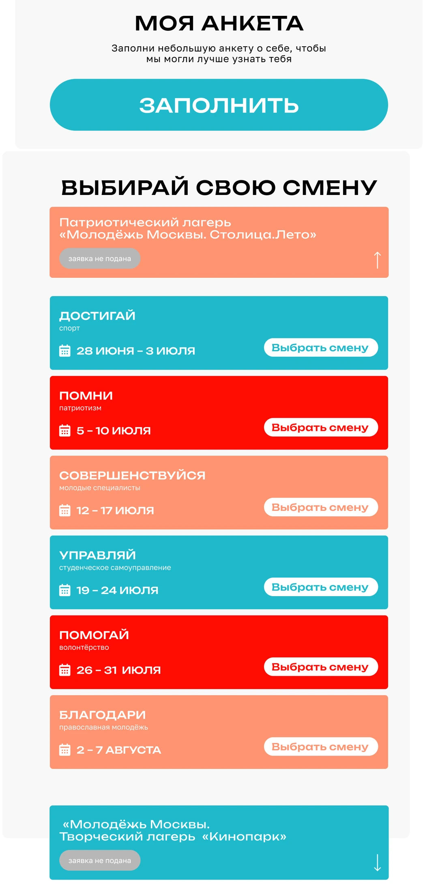
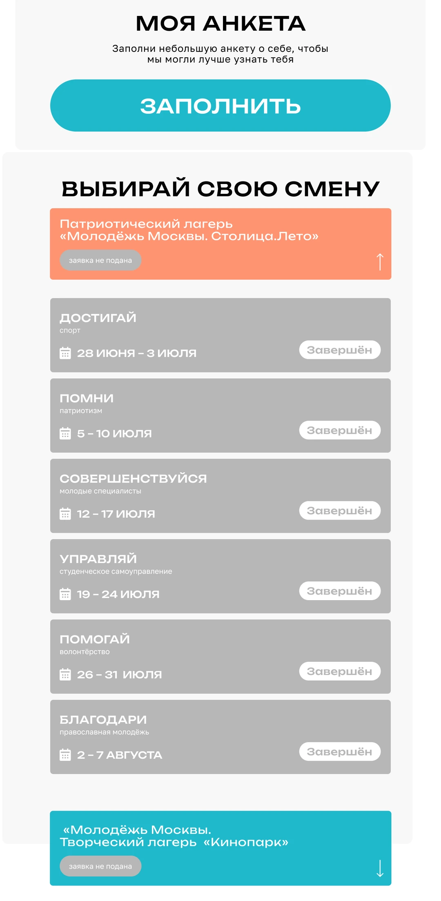
2Выбор смены
экран бывает в двух вариантах: набор идёт или уже завершён — переключатель над экраном
- Набор идётДостигайспорт · 28 июня – 3 июляПомнипатриотизм · 5–10 июляСовершенствуйсямолодые специалисты · 12–17 июляи ещё три смены до 7 августаВыбрать смену
- Набор завершёнвсе смены серые, вместо кнопки — Завершён
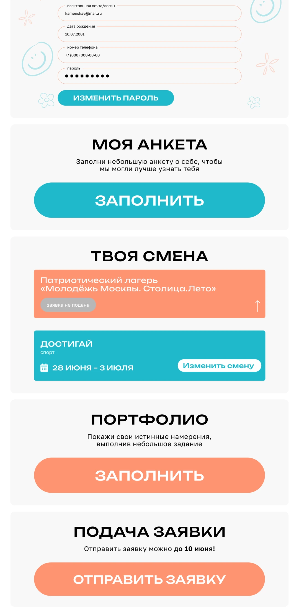
3Смена выбрана
смена выбрана, но заявку пока не отправить: не заполнены анкета и портфолио
- Твоя сменаДостигайспорт · 28 июня – 3 июляИзменить смену
- Моя анкетаЗаполнить
- ПортфолиоЗаполнить
- Подача заявкиОтправить заявкудо 10 июня
- Если не заполненопри нажатии «Отправить заявку» откроется окно «Заполнены не все данные» с кнопкой «Вернуться к заявке»
- Если заполненоокно подтверждения; после него заявку можно отменить, но не позже даты завершения приёма заявок на смену
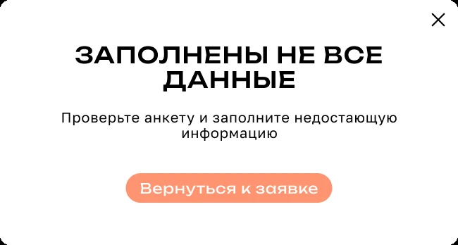
не всё заполнено подтверждение
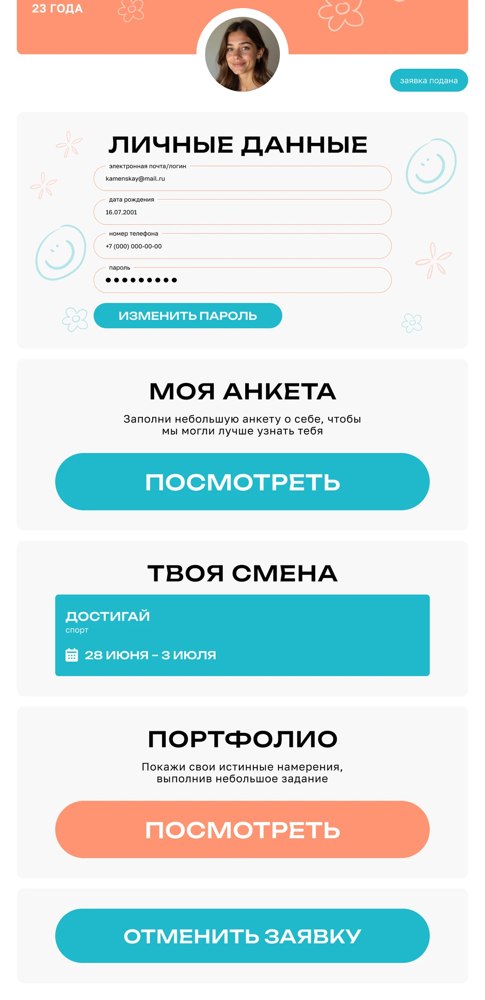
4Заявка подана
вверху появляется статус, а кнопки анкеты и портфолио меняются на «Посмотреть»
- Статусзаявка подана
- Моя анкетаПосмотреть
- ПортфолиоПосмотреть
- Подача заявкиОтменить заявку
- Отменаоткрывается окно подтверждения: заявку можно подать заново, но не позже даты завершения приёма заявок
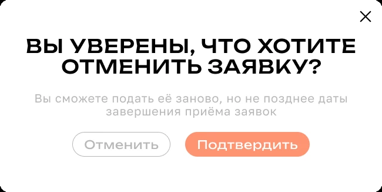
подтверждение отмены
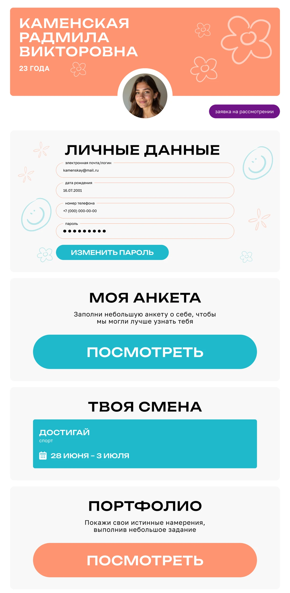
5На рассмотрении
заявка принята и рассматривается: внизу кнопки отмены уже нет, всё доступно только для просмотра
- Статусна рассмотрении
- Моя анкетаПосмотреть
- ПортфолиоПосмотреть
- Подача заявкикнопки «Отменить заявку» больше нет
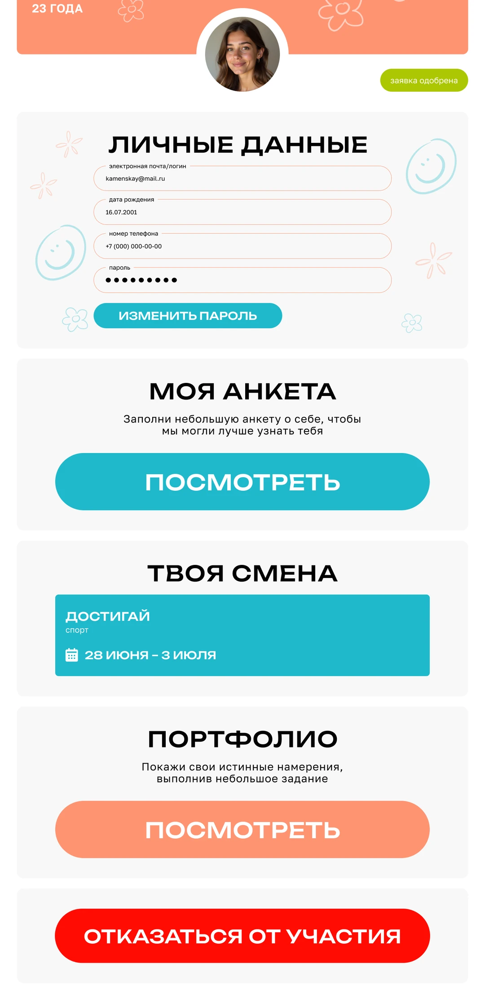
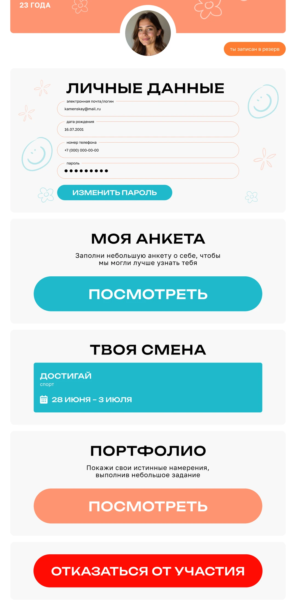
6Ответ по заявке
после рассмотрения приходит ответ, экран один и тот же — меняется только статус; переключатель над экраном
- Заявка одобреназаявка одобренаты едешь
- В резерветы записан в резервпоедешь, если кто-то откажется
- ВнизуОтказаться от участия
- Отказокно подтверждения: после него на выбранную смену поехать уже не получится
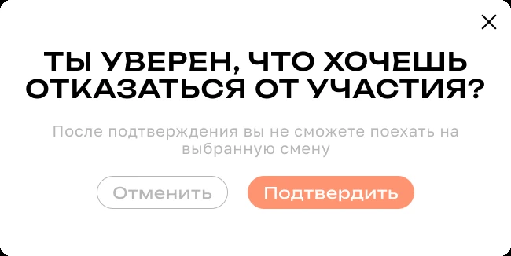
подтверждение отказа
Рамка показывает блок, который меняется на этом шаге; шапка и личные данные остаются прежними, кроме статуса заявки
Творческое задание — «Портфолио» — тоже разбито на два шага: сначала вопросы о себе, потом презентационный ролик с тремя вопросами и ссылкой на видео
Формы: одни и те же поля и кнопки
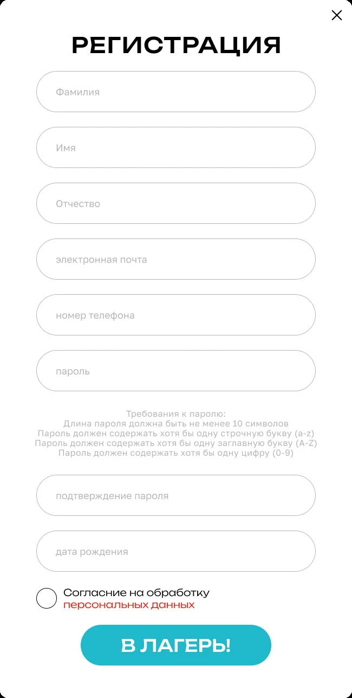
1Регистрация
одно поле на строку, всё нужное для входа в сервис
- Поляфамилия, имя, отчество, почта, телефон, пароль и его подтверждение, дата рождения
- Парольтребования видны ещё до ввода: не менее 10 символов, строчная и заглавная буквы, цифра
- Согласиена обработку персональных данных
- КнопкаВ лагерь!
- Почтапосле регистрации открывается окно с кодом из письма; код можно выслать повторно
- Возрастесли возраст не подходит, появится предупреждение с правилом лагеря
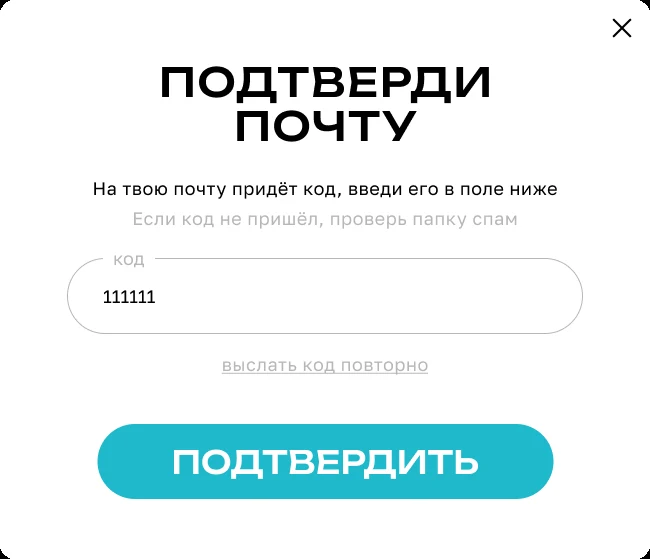
подтверждение почты возраст не подходит
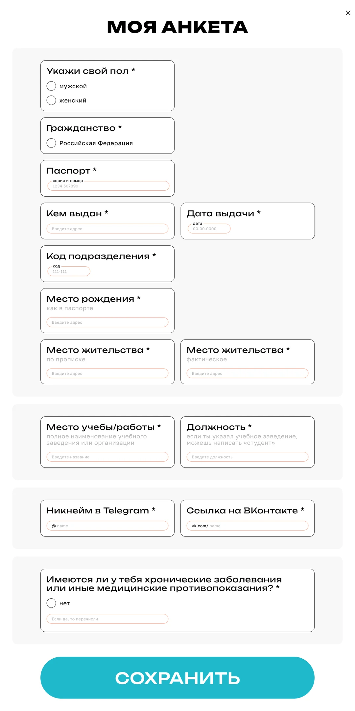
2Моя анкета
общая анкета участника — одна для обоих лагерей
- Блокипол и гражданство, паспорт, места рождения и жительства, учёба или работа, контакты в Telegram и ВКонтакте, здоровье
- Полявопрос сверху, подсказка серым, обязательные помечены звёздочкой
- КнопкаСохранить
- Паспортесли такие паспортные данные уже есть в системе, откроется окно с кнопкой «Изменить данные»
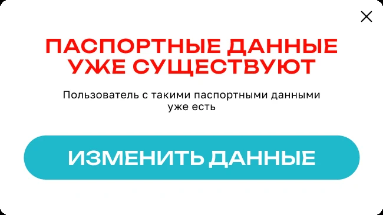
паспорт уже есть
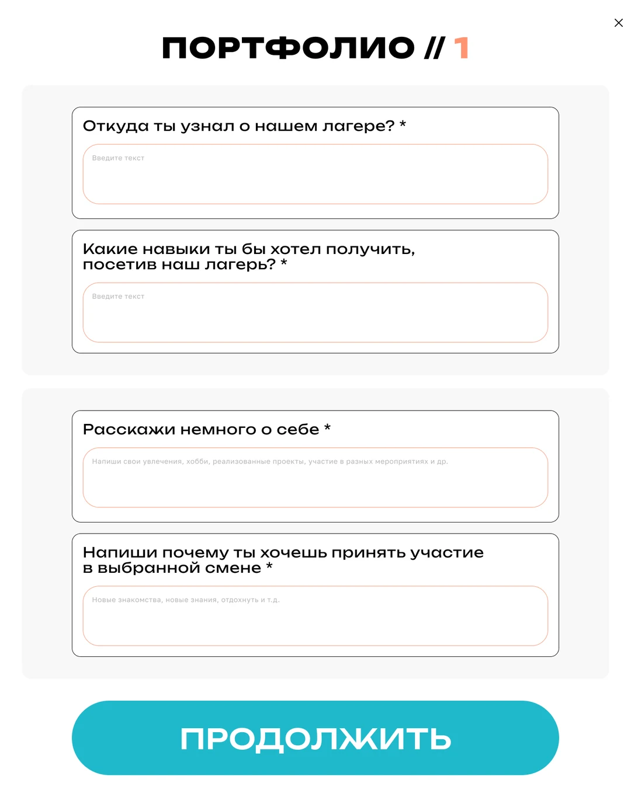
3Портфолио · 1
творческое задание, шаг 1: вопросы о себе
- Вопросыоткуда узнал о лагере, какие навыки хочешь получить, расскажи о себе, почему хочешь участвовать в выбранной смене
- Полякрупное текстовое поле под каждым вопросом, все обязательные
- КнопкаПродолжить
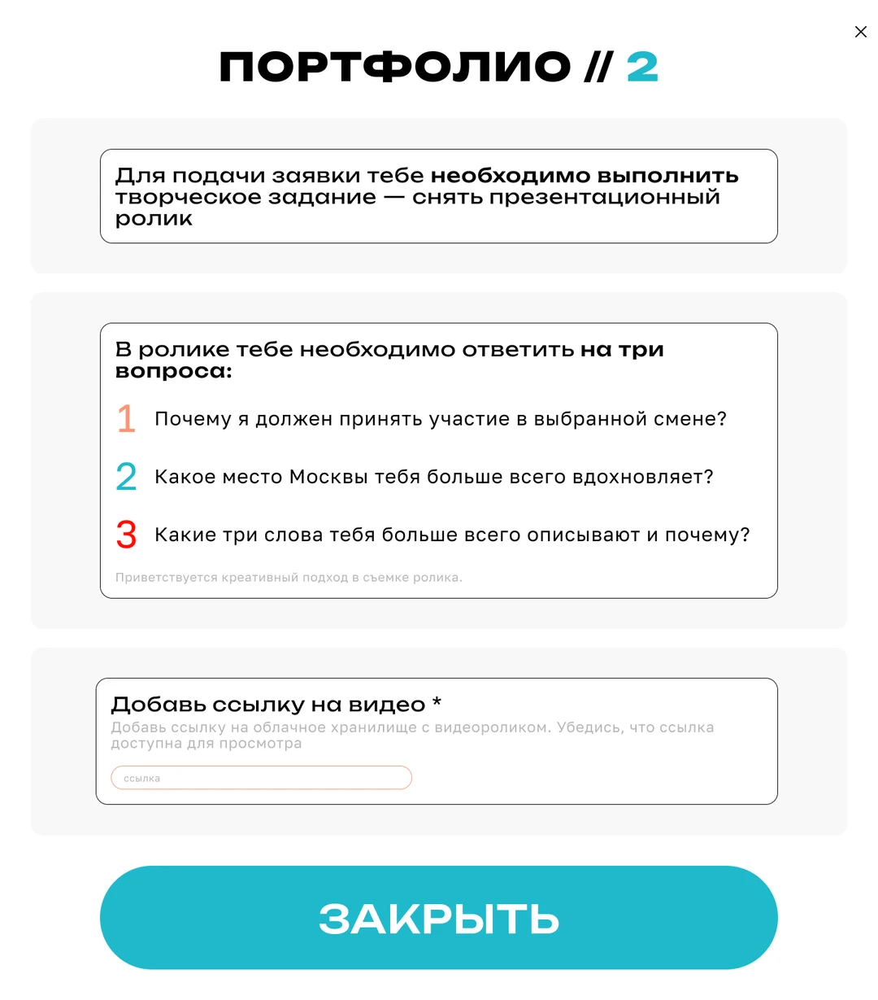
4Портфолио · 2
творческое задание, шаг 2: презентационный ролик; два вида экрана — переключатель над экраном
- Заданиеснять презентационный ролик и ответить в нём на три вопроса
- Вопросыпочему я должен принять участие в выбранной смене; какое место Москвы вдохновляет; какие три слова описывают тебя и почему
- Ссылкана видео в облачном хранилище, доступное для просмотра
- ЗаполнениеСохранить
- ПросмотрЗакрытьтот же экран, но кнопка закрывает его
Регистрация, общая анкета и творческое задание собраны из одних и тех же полей и кнопок
То есть редизайн строился не вокруг идеи «поменять всё», а вокруг вопроса: что действительно нужно изменить, чтобы продукт стал цельнее и понятнее?
06. Первая визуальная идея — рассказать историю
Когда структура сложилась, я перешла к визуальной концепции. Первая версия была самой экспериментальной
Я придумала двух персонажей — Рому и Машу. Рома + Маша = ромашка. Так появилась игра со знаком ромашки, который уже существовал в визуальном языке «СТОлицы»
Я сама нарисовала персонажей в Adobe Illustrator и построила вокруг них небольшую историю. Они сопровождали пользователя по странице и помогали превратить информационный лендинг в более эмоциональный рассказ о летнем приключении
Наброски персонажей
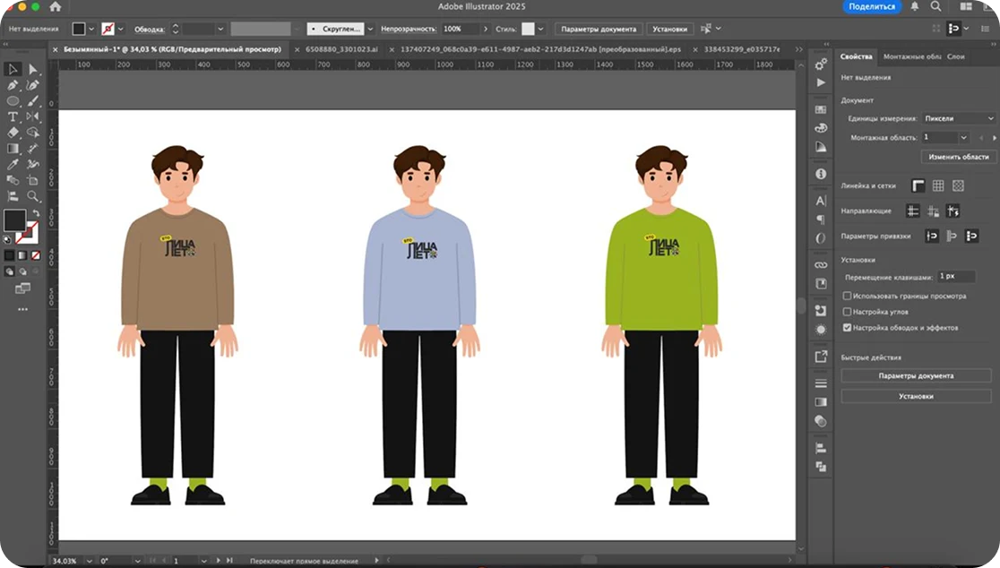
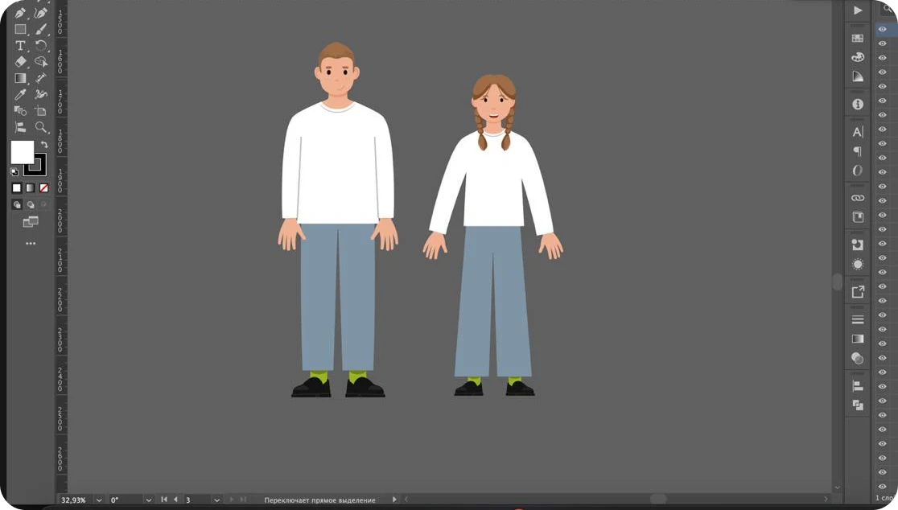
Рома и Маша в Adobe Illustrator
Страница строилась вокруг вопроса: «Что нужно, чтобы сделать лето незабываемым? Рассмотрим на примере двух людей»
Дальше — развилка «Выбор за тобой»: остаться дома или поехать на слёт. Рома и Маша проживали два разных лета, и их истории шли рядом, с цифрами и сравнением. Реальные фотографии отвечали за ощущение настоящего опыта, а персонажи и графические элементы связывали разные части страницы между собой
Версия 1: лендинг-приключение «Выбор за тобой»
В результате получился скорее лендинг-приключение, чем стандартная информационная страница. Концепция понравилась и команде, и руководству. Но в релиз она не пошла
07. Персонажи ушли, а логика осталась
От идеи отказались не потому, что она считалась неудачной. Руководство решило, что новых персонажей лучше сначала постепенно внедрить в офлайн-коммуникацию проекта, посмотреть на реакцию аудитории и только после этого решать, насколько большую роль они должны играть в цифровой среде
Для меня это означало, что визуальную концепцию нужно было пересобрать. Но начинать проект заново уже не пришлось: структура страницы, порядок информации и основной пользовательский сценарий были определены
Я убрала сторителлинг и начала собирать вторую версию вокруг:
- структуры
- навигации
- реальных фотографий
- повторяемых контентных модулей
Свободная коллажная композиция постепенно стала спокойнее и системнее. Смены превратились в повторяемые карточки «Выбирай свою смену!» с номером, названием и датами. В этой версии я уже прорабатывала личный кабинет — с отдельными вариантами под разные смены
А затем появилась ещё одна новая вводная: сайт нужно было привести к визуальной системе проекта «Лето в Москве». Снова изменились палитра, графический язык, композиционные приёмы и общий характер коммуникации. Фактически проект прошёл через три заметно разные визуальные версии:
нарративная концепция → вторая версия → адаптация под «Лето в Москве»
Блок смен: один блок — пять подач
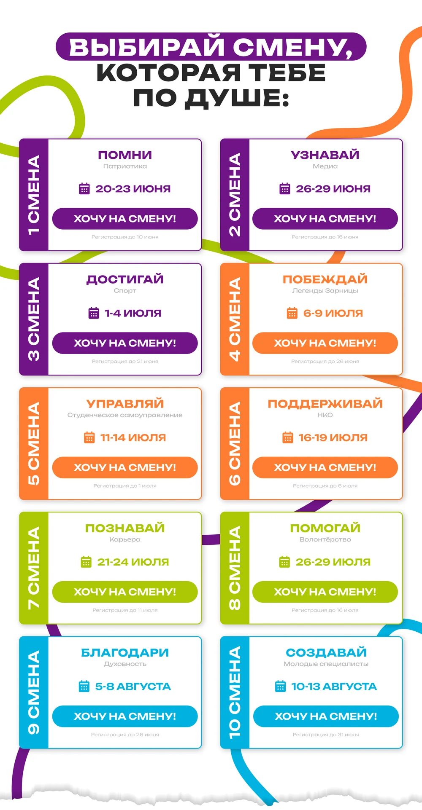
1Первая
самый первый вариант: смены плиткой в две колонки, без фото; всего 10 смен
- Карточканазвание, направление, даты, кнопка «Хочу на смену!» и срок регистрации
- Смены10 карточек, номер смены — вертикальной подписью
- Цвету каждой смены свой цвет
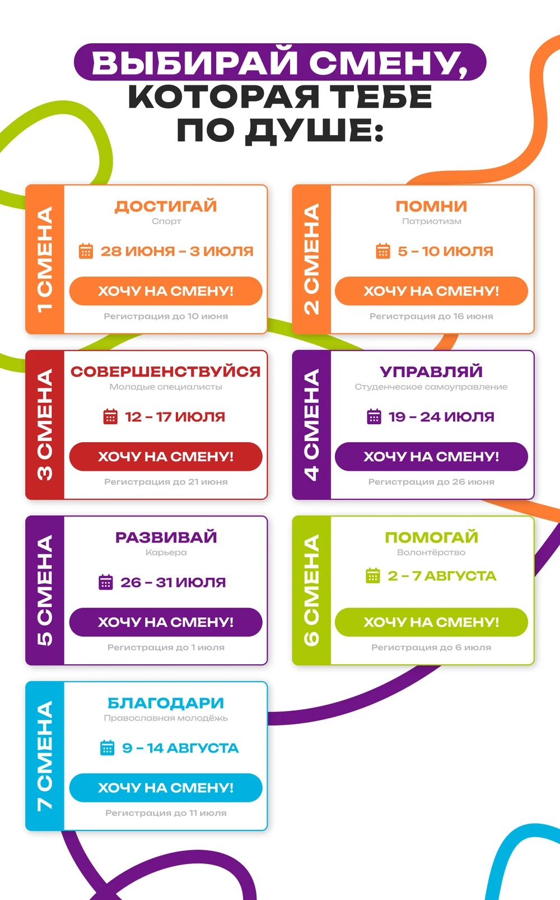
2Сетка
смены плиткой в две колонки, номер смены — вертикальной подписью
- Карточканазвание, направление, даты, кнопка «Хочу на смену!»
- Цвету каждой смены свой цвет
- КнопкаХочу на смену!
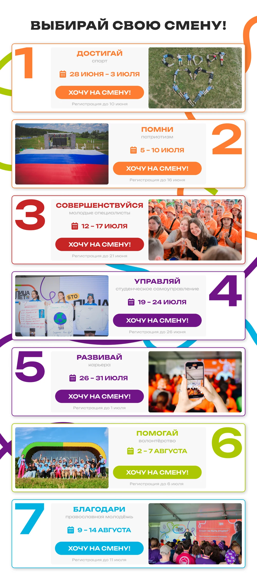
3Список
крупный номер, фото и карточка чередуются слева и справа
- Карточканазвание, направление, даты, кнопка «Хочу на смену!»
- Номеркрупный, стоит рядом с фото
- Фоторядом с карточкой, сторона чередуется
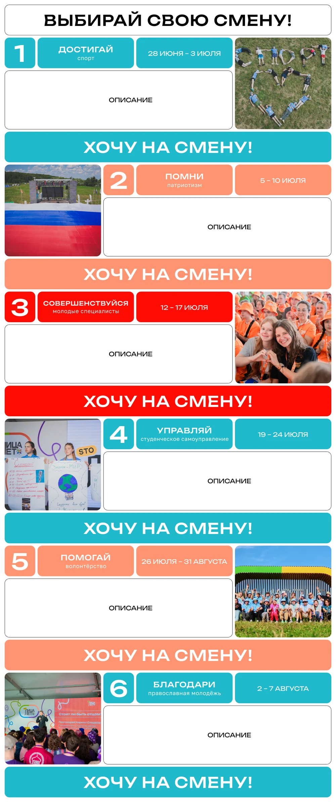
4Переход
промежуточный вариант из модулей-плашек, в финал не вошёл
- Плашкиномер, название, даты и описание — отдельными модулями
- Кнопка«Хочу на смену!» на всю ширину под каждой сменой
- Фотосправа от описания
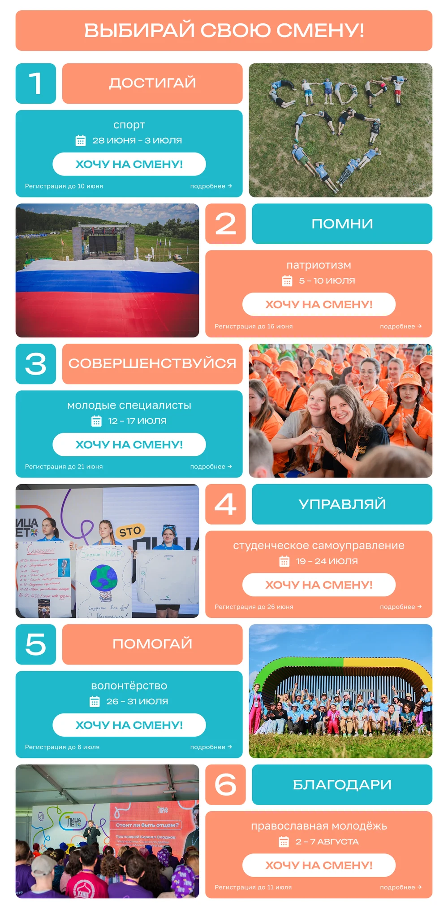
5Финал
плашки в системе «Лето в Москве»: номер, название, для кого, даты, «Хочу на смену!»
- Плашкиномер, название смены, для кого она, даты
- КнопкаХочу на смену!
- Фоточередуются слева и справа
Во всех версиях карточка отвечает на одни и те же вопросы: какая смена, для кого, когда и как подать заявку
При этом не пришлось заново проектировать информационную архитектуру, основной сценарий и функциональную логику. Именно здесь для меня сформулировался главный принцип проекта:
стабильная логика / гибкий визуальный слой
Визуальный язык мог существенно меняться, а пользовательский путь продолжал работать на той же основе
08. Визуальный стиль финальной версии
Финальная версия собрана в визуальной системе «Лето в Москве». Палитру и характер задавал городской проект, а моя задача была разложить их по странице так, чтобы цвет помогал читать структуру
- Бирюзовый #20B9CB: кнопки «Хочу на смену!», номера смен, блок вопросов — всё, что связано с действием и навигацией
- Коралловый #FF9472: карточки смен, «Что тебя ждёт», условия — содержательные блоки
- Красный #FF0C02: подвал страницы — он закрывает лендинг и связывает его с городским проектом
Палитра финальной версии
Модули. Страница собрана из скруглённых карточек с одинаковым радиусом и отступами. Поэтому новый блок можно добавить, не перерисовывая сетку
Карточка смены. Номер → название → для кого смена → даты → «Хочу на смену!» → до какого числа идёт регистрация. Карточки чередуются с фотографиями слева и справа, а бирюзовый и коралловый меняются местами — длинный список шести смен не сливается в одно полотно
Блоки для родителей. Навигация сразу выводит «условия проживания» и «частые вопросы для родителей». Условия собраны в плашки: проживание, питание, трансфер, безопасность, документы. Вопросы — в раскрывающийся список, а в конце «Остались вопросы? Пиши нам!»
Два лагеря на одном сайте. Вверху страницы — переключатель между двумя лагерями проекта: «Столица.Лето» и творческим лагерем «Кинопарк». В личном кабинете у каждого лагеря свои смены, своё портфолио и своя подача заявки, а участник может подать заявку в оба
Персонаж. Объёмный 3D-кот из брендинга «Лето в Москве». На странице он появляется дважды: на первом экране и в блоке условий
Шрифт. Unbounded — корпоративный шрифт «СТОлицы». Его же использует «Лето в Москве», поэтому при переходе на систему городского проекта шрифт менять не пришлось
Финальная версия: страница целиком
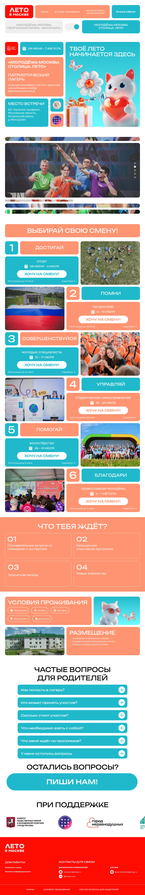
Страница целиком, как её видит участник: листается внутри окна
09. Сервисная часть тоже должна была стать системой
Чем глубже я уходила в регистрацию и анкету, тем больше появлялось состояний. Например, одно поле электронной почты могло быть:
пустым → активным → заполненным → обязательным → ошибочным
Поля: пустое, активное, заполненное, обязательное, ошибка
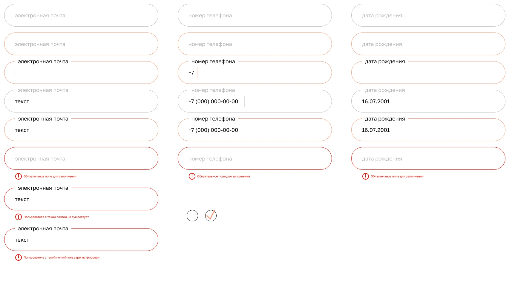
У телефона добавлялась маска ввода. У пароля — требования к формату, несовпадение значений и возможность показать или скрыть символы. Отдельно существовали ошибки загрузки файлов, предупреждения, выпадающие списки и подтверждения успешных действий
Пароль: ошибки формата, показ и скрытие символов
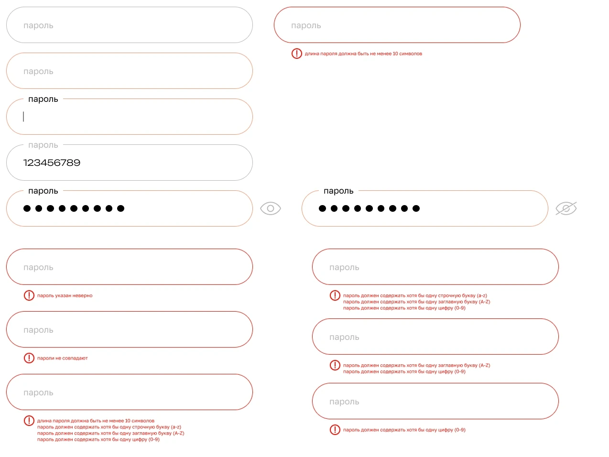
Рисовать каждое состояние как отдельное уникальное решение не имело смысла. Поэтому я собрала повторяемую систему форм и обратной связи. Для основных полей были предусмотрены состояния «по умолчанию», «фокус», «заполнено», «ошибка», а на уровне сценария — ошибка, предупреждение и успешное действие
Мне было важно, чтобы ошибка не просто меняла цвет рамки, а объясняла человеку, что именно произошло и что нужно исправить. Например:
- требования к паролю видны ещё до ввода: не меньше 10 символов, строчная и заглавная буква, цифра
- если возраст не подходит, окно объясняет правило — от 18 до 35 лет на момент начала смены — и сразу предлагает выбрать другую смену
- перед отправкой заявки окно предупреждает, что отменить её можно только до конца приёма заявок
- при отмене подтверждённой заявки творческое задание и смена сбрасываются, и человек возвращается к выбору смены
Из этого сложился UI-kit:
- поля в четырёх состояниях — для текста, телефона, пароля, даты и выпадающих списков
- три типа сообщений — ошибка, предупреждение, успешное действие
- кнопки, чекбоксы, загрузка файлов, шаги анкеты, карточки смен
Кнопки: у каждой есть обычное и неактивное состояние
Отдельно я собрала все системные окна, которые человек может увидеть по ходу пути: от регистрации и входа до отказа от участия. Для кабинета — кнопки для каждого действия с заявкой: отправить, отменить, отказаться от участия, сохранить, написать организаторам
Системные окна: 13 окон на весь путь
Одинаковые паттерны дальше использовались между регистрацией, анкетой и другими сервисными экранами. Так постепенно сервисная часть стала восприниматься как одна система, а не набор отдельных страниц
10. Адаптив тоже проектировался как часть системы
Версии для компьютера и мобильных устройств я рассматривала как два состояния одного интерфейса. Мобильная версия не должна была быть просто уменьшенным макетом для компьютера
Для меньшего экрана отдельно перестраивались навигация, карточки, последовательность контента, формы и расположение ключевых действий. Задача была в том, чтобы сохранить логику и приоритеты интерфейса, даже когда меняется его компоновка
11. Из Figma — в разработку
Я была единственным дизайнером проекта, поэтому моя работа не заканчивалась на готовом макете. Для разработчиков я подготовила:
- финальные экраны
- состояния элементов
- компоненты
- версии для разных размеров экрана
- комментарии по реализации
- прототип в Figma, где экраны связаны между собой по сценарию
После передачи продолжила участвовать в сборке: отвечала на вопросы разработчиков, проверяла интерфейс и возвращала правки, если реализация расходилась с макетами
Большую часть решений удалось реализовать без существенного упрощения. Так проект дошёл не только до красивого файла в Figma, но и до реального продукта
12. Проект дошёл до реального сезона
Финальная версия была запущена к сезону 2025 года и использовалась как реальный инструмент проекта — сайт работал на leto.mosmolodezh.ru
Живой сайт: лендинг → регистрация → личный кабинет
Через него участник мог пройти основной путь:
узнать о лагере → изучить смены → выбрать подходящую → зарегистрироваться → заполнить заявку → отправить её → продолжить взаимодействие через личный кабинет
За сезон проект объединил 3 000+ участников и 6 тематических смен
Я сознательно не использую эти цифры как доказательство эффективности редизайна. После запуска у меня не было доступа к аналитике конверсии или потерям пользователей между этапами, поэтому 3 000+ — это масштаб продукта, на котором работал интерфейс, а не метрика моего дизайна
13. Позже я вернулась к лендингу ещё раз
Уже после проекта я дополнительно протестировала лендинг на аудитории 18–35 лет, n=30
Проверка на аудитории 18–35 лет, n=30
Один кружок — один респондент
Самый полезный здесь — последний показатель. Он показывает, что даже запущенный интерфейс не становится «готовым навсегда»
14. Что я бы проверила сейчас
Во время проекта у меня не было полноценной продуктовой аналитики, поэтому сейчас я бы начала не с ещё одного визуального редизайна. Сначала посмотрела бы на реальную воронку:
лендинг → начало заявки → заполнение заявки → отправка
И отдельно — на потери между этапами анкеты. Это позволило бы понять, где пользовательский сценарий действительно создаёт трудности:
- на каком этапе чаще всего бросают заявку
- возвращаются ли к незавершённой форме
- какие поля чаще вызывают ошибки
- действительно ли текущая этапность помогает или её стоит менять
- где именно на телефоне возникают сложности, о которых сказали 13%
Воронка заявки: что я бы смотрела в первую очередь
01сколько людей доходит до заявки
02регистрация и подтверждение почты
03потери между этапами
04дошли до конца
Воронка показывает порядок этапов, цифр здесь нет: аналитики у меня не было
Только после этого я бы принимала решение о сокращении формы, изменении структуры или дополнительных подсказках
Вместо итога
Этот проект начинался как редизайн существующего сайта, а оказался работой со структурой, системой и вводными, которые менялись по ходу. Визуал я пересобирала три раза — продукт ни разу
стабильная логика / гибкий визуальный слой